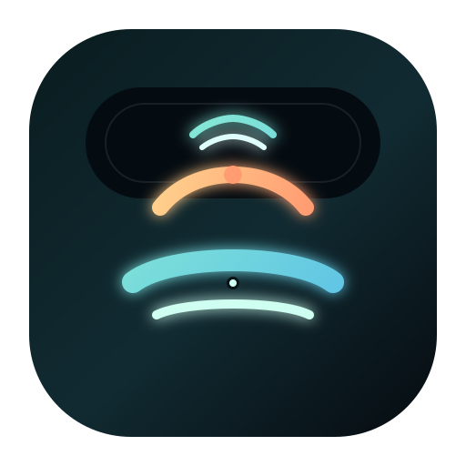

Question
Which deployment target?
Production
Staging
Local only

Vibe Island dynamic island for AI agentsNative macOS companion
Vibe Island gives Claude Code, Codex, Gemini CLI, Cursor, OpenCode, and Kiro a single notch native control room. Watch progress, approve actions, answer questions, and jump back into the exact terminal session without breaking flow.
Permission request
src/auth/middleware.ts13+ if (!token) throw new AuthError("missing")
14+ return jwt.verify(token, secret)Question
Jump back
Return to the exact tab the moment the agent finishes or needs help.
Activity
users.tsnpm testSupported agents
Every agent. One glance.
The structure tracks the reference closely, but the story has been rewritten around a sharper macOS utility angle and a more coastal neon visual system.
Monitor
Claude Code, Codex, Gemini CLI, Cursor, and more read as one shared operational surface.
Approve
Turn edit approvals into a quick glance decision instead of a constant terminal interruption.
Ask
Pick an option or unblock the next step while your editor and terminal stay where they are.
Jump
Go straight to the tab, split, or pane that matches the agent event instead of hunting for context.
Native
Lightweight, glassy, and purpose built for Apple workflows rather than another bulky desktop shell.
Local
No cloud relay is required in the core positioning, so the pitch stays simple for developer teams.
Flow, not friction
Track what is happening, unblock what needs a human, then bounce directly to the live terminal context.
The notch becomes a live queue for sessions, timers, and status transitions across tools.
Permissions and questions are framed as quick choices instead of full task switching.
The final click or keyboard shortcut returns you to the exact terminal surface that matters.
Changelog placeholder
The navigation keeps a visible changelog entry, but the first build treats it as a homepage block so the site ships as one clean static page.
v0.1
Homepage, product framing, brand system, favicon set, and browser tests land together.
v0.2
Replace placeholder CTA targets once the trial binary and commerce routes are ready.
v0.3
Expand the static site into a fuller launch surface without changing the visual core.
One-time pricing
This first pass keeps the product positioned as a paid macOS utility. Trial and checkout buttons are intentionally placeholders so the page can ship before distribution is wired.
Single license
$19.99placeholder launch price
Frequently asked questions
The launch page mirrors the FAQ-heavy conversion pattern from the reference while keeping the answers brief.
The first pass positions Vibe Island around Claude Code, Codex, Gemini CLI, Cursor, OpenCode, Kiro, Copilot, Qoder, Droid, and CodeBuddy.
That is a core part of the product story. The notch style panel surfaces approvals and fast responses directly in view.
The homepage positions Vibe Island as fully local, with no cloud relay required in the main workflow narrative.
No. The main selling point is unifying multiple agent tools and terminals into one predictable place.
The site is ready now, while the CTA targets stay as placeholders until you connect the actual trial and payment links.
The brand direction mixes notch hardware geometry with island horizon cues so the product name feels intentional instead of decorative.